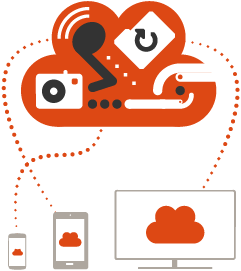

How would you like a PC that fits in your pocket? For the lowdown
on Ubuntu for Android, in terms your grandma could understand,
watch this short video.
And for news on Ubuntu for Android
products, watch this space.
Now multi-core Android phones can be PCs too. Ubuntu for Android enables high-end Android handsets to run Ubuntu, the world’s favourite free PC desktop operating system. So users get the Android they know on the move, but when they connect their phone to a monitor, mouse and keyboard, it becomes a PC.
With over 20 million users, Ubuntu is the world’s favourite
free operating system – and Ubuntu for Android is the first
complete solution for office productivity on a phone.
It lets
Android and Ubuntu share the same Linux kernel, so they can run at
the same time – Android for the phone experience and Ubuntu when
docked. Which means one address book, one set of bookmarks, one
place for text messages and one inbox for mail. And thanks to
careful integration between the Ubuntu desktop and Android, user’s
have access to the phone’s functions when it’s docked – including
making and receiving calls.
Ubuntu for Android gives mobile workers a compelling reason to
upgrade to multi-core handsets with more RAM, more storage, faster
GPUs and CPUs. It’s not just a phone they are buying, it’s a
desktop too.
While mid-range phones can deliver a perfect Android
experience, it takes high-end horsepower to drive a phone and a
desktop at the same time. Newer multi-core processors are up to the
job, and Ubuntu is the killer app for that hot hardware. It’s the
must-have feature for late-2012 high-end Android phones.
“Ubuntu is the killer app for multi-core
phones
in 2012”
A
built-in desktop is also a driver of LTE, which offers higher
bandwidth for productivity apps and lower latency for business
users. Cloud apps like Google Docs are best used with a full
desktop, and shine with LTE.
The phone has traditionally been a
slower, less productive tool. When you’re at a desktop, you want to
get things done, quickly. So you appreciate the difference between
3G and 4G. Adding a desktop to the phone justifies the extra cost
of newer network technologies for business customers.
For phone manufacturers eager to expand their audience, Ubuntu for Android gives access to entirely new markets. Enterprise IT departments currently support a PC and at least one phone for every desk-based worker. Our solution reduces their burden to a single device for every user. So Ubuntu for Android helps you tap into the lucrative corporate PC replacement and thin client markets. Ubuntu is already the most popular replacement for Windows on the corporate desktop, with deployments of tens of thousands of desktops in multiple institutions. In developing economies, where there is little historical PC penetration, the phone can define personal computing for an audience that has no legacy attachment to the desktop. For the next billion knowledge workers, their first PC could be their first smartphone, but they’ll need a device that can do more than just be a handset, if they really want to shine. Ubuntu ships pre-installed on millions of PC’s from major manufacturers in China, India and Brazil today. It’s easy, it has an amazing range of software on tap, and it’s totally integrated with our personal cloud service, Ubuntu One. Pure 21st century goodness.
Ubuntu for Android drops in cleanly alongside the rest of Android, so it is easy to integrate into current production roadmaps. The hardware requirements are straightforward and, with a broad range of ARM and x86 hardware supported, it can realistically be added to phones already in development. Of course, your phone needs the docking capability and hardware support for HDMI and USB. But that’s standard for high-end models in the current generation of devices in development.
The Ubuntu desktop sets the standard for ease of use. That’s one reason why Ubuntu is now the world’s favourite free operating system - on the desktop as well as the server. It’s shipped by more PC brands, used by more people, targeted by more developers and covered by more journalists than any other Linux desktop.
Ubuntu for Android is a complete desktop with a full range of desktop applications including office, web browsing, email, media and messaging. Personal information like contacts, calendars, photo galleries and music can be accessed from both the phone and the desktop interface. SMS texts arrive on your desktop if you are docked when they show up, and calls are handled like VoIP if you want to stay working while you chat. Ubuntu for Android brings the desktop world together with the phone world, seamlessly. Our reputation and brand have taken seven years to create. Because we care about quality, Ubuntu selects only the very best applications for install by default. And because we care about security, Ubuntu includes free security updates across more applications than any competitor. During the netbook era, every manufacturer created their own Linux, but customers rebelled. Today, they ship Ubuntu.
Users will want at least one dock, complete with monitor, keyboard and mouse. Many will want two of each - one for the office and one for the home. And mobile users will opt for clamshell devices that give them a laptop experience whenever they need it - on the train, on the plane or in meetings. [bild] Desktop productivity goes well beyond the keyboard, monitor and mouse. Imagine projectors with a phone dock built in, so you can carry less to your presentations. And imagine TVs that become home PCs when you dock your phone: perfect for the emerging market where LTE will be the normal way for new users to connect to the Internet.
Android is a mobile solution, designed for a touch interface on a handheld device. On the desktop, where users expect a pointer-driven experience, a PC operating system is essential. Several vendors have tried to bring Android-based desktops or laptops to market, with no success; Android was designed for touch only, and has its hands full winning the tablet wars. A complete desktop solution needs a full range of desktop applications. While a mobile OS carries no deep desktop software catalogue, Ubuntu offers thousands of applications, all designed for the desktop and most, like Ubuntu, free. And Ubuntu is certified by governments, industry and enterprises, widely deployed on the desktop, and supported by leading management solutions. Another alternative would be a web-top, or web only desktop. But markets have not responded to web-only environments. The desktop is a high-productivity mode, not a media consumption mode or a browsing mode. That’s why we’ve brought the full power of a native desktop to this solution.
Canonical is the commercial entity behind Ubuntu. We have staff in more than 30 countries, with offices in London, Boston, Taipei, Montreal, Shanghai, and São Paulo. We have been working with the ARM architecture for years, having co-founded Linaro, the consortium dedicated to the unification of Linux on ARM and the locus of development for ARM on servers and laptops. Canonical and Vodafone shipped the world’s first ARM smartbook. Our OEM team has years of experience in bringing new products to market, providing complete, end-to-end solutions - identifying opportunities, developing strategies and ensuring a stunning experience on every Ubuntu device.
Mobile network operators and handset makers If you’d like to help make this happen, please get in touch to arrange a meeting. Contact information First name: * Last name: * Company name: * Company website: * Email address: * Phone number: * Your interests What influence do you have over launching a phone in the next 12 to 18 months? What is your main interest in Ubuntu for phones? * Are you personally attending MWC? Yes Please share more: * Your organisation Country: * Industry: * Job role: * Number of employees: * Would you like to follow progress with our mobile newsletter? I would like to receive occasional news about Ubuntu by email. All information provided will be handled in accordance with the Canonical privacy policy.